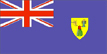

{kind=link}


![[Country map of Turks and Caicos Islands]](../maps/tk-map.jpg)
| Turks and Caicos Islands |
 |
|
| | |
| Introduction |
Background: The islands were under Jamaican jurisdiction until 1962, when they assumed the status of a crown colony. The governor of The Bahamas oversaw affairs from 1965 to 1973. With Bahamian independence, the islands received a separate governor in 1973. Although independence was agreed upon for 1982, the policy was reversed and the islands are presently a British overseas territory.
| Geography |
Location: Caribbean, two island groups in the North Atlantic Ocean, southeast of The Bahamas
Geographic coordinates: 21 45 N, 71 35 W
Map references: Central America and the Caribbean
Area:
total:
430 sq km
land:
430 sq km
water:
0 sq km
Area - comparative: 2.5 times the size of Washington, DC
Land boundaries: 0 km
Coastline: 389 km
Maritime claims:
exclusive fishing zone:
200 nm
territorial sea:
12 nm
Climate: tropical; marine; moderated by trade winds; sunny and relatively dry
Terrain: low, flat limestone; extensive marshes and mangrove swamps
Elevation extremes:
lowest point:
Caribbean Sea 0 m
highest point:
Blue Hills 49 m
Natural resources: spiny lobster, conch
Land use:
arable land:
2%
permanent crops:
0%
permanent pastures:
0%
forests and woodland:
0%
other:
98% (1993 est.)
Irrigated land: NA sq km
Natural hazards: frequent hurricanes
Environment - current issues: limited natural fresh water resources, private cisterns collect rainwater
Geography - note: 30 islands (eight inhabited)
| People |
Population: 17,502 (July 2000 est.)
Age structure:
0-14 years:
33% (male 2,889; female 2,806)
15-64 years:
63% (male 5,834; female 5,274)
65 years and over:
4% (male 313; female 386) (2000 est.)
Population growth rate: 3.55% (2000 est.)
Birth rate: 25.65 births/1,000 population (2000 est.)
Death rate: 4.57 deaths/1,000 population (2000 est.)
Net migration rate: 14.46 migrant(s)/1,000 population (2000 est.)
Sex ratio:
at birth:
1.05 male(s)/female
under 15 years:
1.03 male(s)/female
15-64 years:
1.11 male(s)/female
65 years and over:
0.81 male(s)/female
total population:
1.07 male(s)/female (2000 est.)
Infant mortality rate: 18.66 deaths/1,000 live births (2000 est.)
Life expectancy at birth:
total population:
73.28 years
male:
71.15 years
female:
75.51 years (2000 est.)
Total fertility rate: 3.25 children born/woman (2000 est.)
Nationality:
noun:
none
adjective:
none
Ethnic groups: black
Religions: Baptist 41.2%, Methodist 18.9%, Anglican 18.3%, Seventh-Day Adventist 1.7%, other 19.9% (1980)
Languages: English (official)
Literacy:
definition:
age 15 and over has ever attended school
total population:
98%
male:
99%
female:
98% (1970 est.)
| Government |
Country name:
conventional long form:
none
conventional short form:
Turks and Caicos Islands
Data code: TK
Dependency status: overseas territory of the UK
Government type: NA
Capital: Cockburn Town (on Grand Turk)
Administrative divisions: none (overseas territory of the UK)
Independence: none (overseas territory of the UK)
National holiday: Constitution Day, 30 August (1976)
Constitution: introduced 30 August 1976; suspended in 1986; restored and revised 5 March 1988
Legal system: based on laws of England and Wales, with a small number adopted from Jamaica and The Bahamas
Suffrage: 18 years of age; universal
Executive branch:
chief of state:
Queen ELIZABETH II (since 6 February 1953), represented by Governor John KELLY (since NA September 1996)
head of government:
Chief Minister Derek H. TAYLOR (since 31 January 1995)
cabinet:
Executive Council consists of three ex officio members and five appointed by the governor from among the members of the Legislative Council
elections:
none; the monarch is hereditary; governor appointed by the monarch; chief minister appointed by the governor
Legislative branch:
unicameral Legislative Council (19 seats, of which 13 are popularly elected; members serve four-year terms)
elections:
last held 4 March 1999 (next to be held by NA 2003)
election results:
percent of vote by party - PDM 52.2%, PNP 40.9%, independent 6.9%; seats by party - PDM 9, PNP 4
Judicial branch: Supreme Court
Political parties and leaders: People's Democratic Movement or PDM [Derek H. TAYLOR]; Progressive National Party or PNP [Washington MISICK]; United Democratic Party or UDP [Wendal SWANN]
International organization participation: Caricom (associate), CDB, Interpol (subbureau)
Diplomatic representation in the US: none (overseas territory of the UK)
Diplomatic representation from the US: none (overseas territory of the UK)
Flag description: blue, with the flag of the UK in the upper hoist-side quadrant and the colonial shield centered on the outer half of the flag; the shield is yellow and contains a conch shell, lobster, and cactus
| Economy |
Economy - overview: The Turks and Caicos economy is based on tourism, fishing, and offshore financial services. Most capital goods and food for domestic consumption are imported. The US was the leading source of tourists in 1996, accounting for more than half of the 87,000 visitors; tourist arrivals had risen to 93,000 by 1998. Major sources of government revenue include fees from offshore financial activities and customs receipts.
GDP: purchasing power parity - $117 million (1997 est.)
GDP - real growth rate: 4% (1997 est.)
GDP - per capita: purchasing power parity - $7,700 (1997 est.)
GDP - composition by sector:
agriculture:
NA%
industry:
NA%
services:
NA%
Population below poverty line: NA%
Household income or consumption by percentage share:
lowest 10%:
NA%
highest 10%:
NA%
Inflation rate (consumer prices): 4% (1995)
Labor force: 4,848 (1990 est.)
Labor force - by occupation: about 33% in government and 20% in agriculture and fishing; significant numbers in tourism, financial, and other services (1997 est.)
Unemployment rate: 10% (1997 est.)
Budget:
revenues:
$47 million
expenditures:
$33.6 million, including capital expenditures of $NA (1997/98 est.)
Industries: tourism, offshore financial services
Industrial production growth rate: NA%
Electricity - production: 5 million kWh (1998)
Electricity - production by source:
fossil fuel:
100%
hydro:
0%
nuclear:
0%
other:
0% (1998)
Electricity - consumption: 5 million kWh (1998)
Electricity - exports: 0 kWh (1998)
Electricity - imports: 0 kWh (1998)
Agriculture - products: corn, beans, cassava (tapioca), citrus fruits; fish
Exports: $4.7 million (1993)
Exports - commodities: lobster, dried and fresh conch, conch shells
Exports - partners: US, UK
Imports: $46.6 million (1993)
Imports - commodities: food and beverages, tobacco, clothing, manufactures, construction materials
Imports - partners: US, UK
Debt - external: $NA
Economic aid - recipient: $5.7 million (1995)
Currency: 1 United States dollar (US$) = 100 cents
Exchange rates: US currency is used
Fiscal year: calendar year
| Communications |
Telephones - main lines in use: 3,000 (1994)
Telephones - mobile cellular: 0 (1994)
Telephone system:
fair cable and radiotelephone services
domestic:
NA
international:
2 submarine cables; satellite earth station - 1 Intelsat (Atlantic Ocean)
Radio broadcast stations: AM 3 (one inactive), FM 6, shortwave 0 (1998)
Radios: 8,000 (1997)
Television broadcast stations: 0 (broadcasts from The Bahamas are received; cable television is established) (1997)
Televisions: NA
Internet Service Providers (ISPs): 1 (1999)
| Transportation |
Railways: 0 km
Highways:
total:
121 km
paved:
24 km
unpaved:
97 km
Ports and harbors: Grand Turk, Providenciales
Merchant marine: none (1999 est.)
Airports: 7 (1999 est.)
Airports - with paved runways:
total:
4
1,524 to 2,437 m:
3
914 to 1,523 m:
1 (1999 est.)
Airports - with unpaved runways:
total:
3
914 to 1,523 m:
2
under 914 m:
1 (1999 est.)
| Military |
Military - note: defense is the responsibility of the UK
| Transnational Issues |
Disputes - international: none
Illicit drugs: transshipment point for South American narcotics destined for the US